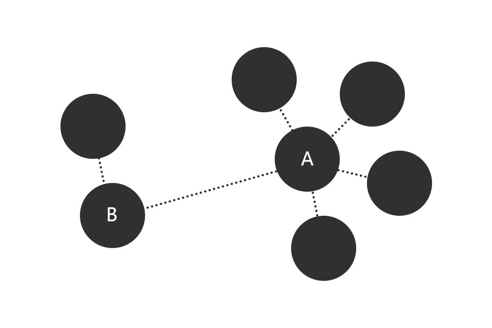
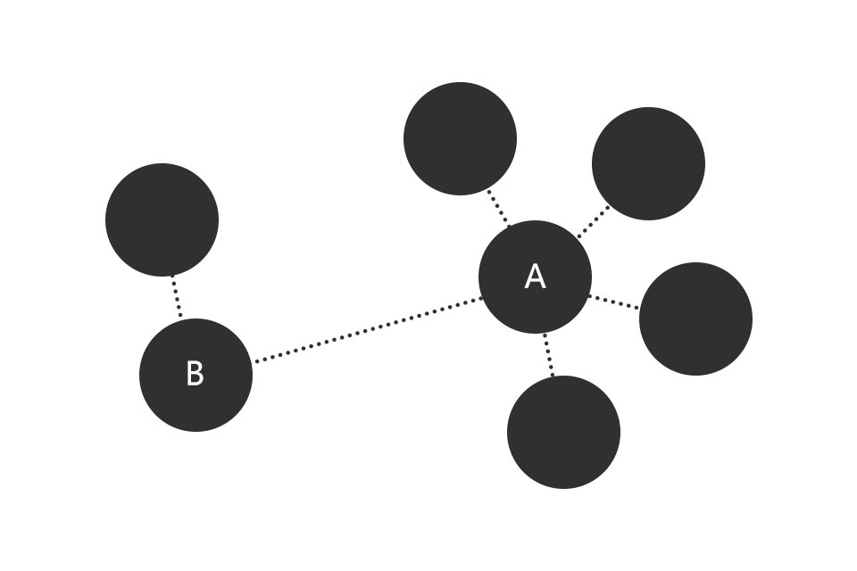

关于社区型产品用户增长的思考
mark | 谢晓聪 | 2018-05-23
移动物联网的人口红利已经过去，市场上90%的流量掌握在10%的产品手上，流量的移动几乎很少。仅仅通过需求强度刺激来进行获客的方式，效率慢慢变低，同时留存也越来越难。从AARRR的模型中，先从Acquisiton（获客）来进行思考。
社区网络的本质是关系和信息，关系是节点（node）与边（edge）之间的联系。通过节点与边可以构成一个大型且复杂的网络图。
基于这样一个网络图我们能更好的梳理用户增长的思路，在整个网络图中，有的节点周围链接的其他节点多，有的却少；选择什么样的节点作为切入口，以及从哪些渠道可以找到这些节点使我们接下来要讨论的话题。
#找什么样的用户？#
社会资本:节点链接能力的强弱直接映射了社会资本的高低。社会资本在这里映射的是链接节点的能力以及对周围节点的影响力。在社区里节点就是用户，社会资本越高的用户所链接的关注者越多（比如下图的节点A），对关注者的影响能力越强。如果我们能抓住高社会资本的用户群体，那么我们就能影响更多的其他用户群体。

eg.举个例子，在项目处于潜伏期时，我们可以通过外部挖掘优质的KOL（内容贡献者）到平台内部进行内容的产出，甚至是独家内容的产出，这样可以进行一定原始内容的积累同时也能洗一部分流量进来。同时我们需要培养部分自己的KOL，并且在这个阶段先做强关系——KOL之间的互动，将流量进行叠加，提高外部流量的转化和留存；再做弱关系——普通贡献者及浏览者间的社会资本拓展。
中心度:社会资本是衡量一个节点综合链接能力的指标维度，而中心度可以反映一个用户通过网络获得不同类型资源的能力。我们需要具备较高向量特征中心度的用户，以此作为筛选的细分指标维度。向量特征中心度的用户特征是与他建立链接的很多关注者往往也被其他关注者所链接，更符合三元闭包的原理特征——关注者之间也越容易建立起链接。链接建立的越多，社会资本越强，对平台的依赖度越高。
对外部流量的切入思考可以通过社会资本以及中心度这两项指标进行筛选。
#去哪找用户？#
因为目前市场上流量基本已经停止流动，并且垂直领域的寡头也已经培养了核心用户的忠诚度。所以要想在垂直领域的竞品身上做流量的争夺已经很难，像Airbnb与Craigslist之间的流量竞争已成为历史。所以目前有两条比较明确的思路：
与垂直竞品争夺流量:首先垂直领域的竞品已经与头部、部分腰部用户建立起了忠诚度，这样去切目标群体比较难。从本质上在垂直领域进行流量的转移就是零和博弈 ，长期进行只会损害双方收益——最好的例子就是滴滴和Uber的价格战，双方通过提高获客成本来进行流量的争夺，长久下来两方收益都会大打折扣，直到最后其中一方收购另外一方，彻底的垄断这个垂直领域。
在非竞品领域挖取流量:我们可以换一种思路，在其他领域中找到符合目标画像的群体。通过做利益的叠加来进行获客，可以理解为做相同群体不同层次需求的综合服务能力 ，典型的例子就是QQ会员特权与其他腾讯系产品服务能力的叠加。
这些方法都是一些战术的思考，具体可以结合业务线来通过不同的手段实施。同时这也是社区型产品的一种思路，电商、工具型产品可能思考的方式完全不一样，但我认为核心的思路还是想通的，找到可以衡量获客以及留存的指标变量，再进行分析找到一条可以尝试的战术打法。
#如何控制获客成本？#
每个用户都有生命周期价值（LTV），当用户生命周期价值>用户获客成本+运营成本时，整个营收是处于盈利状态。那么我们先从LTV的公式下手分析，用户生命周期价值=用户生命周期内投资次数x客单价x毛利率；这里有三项可以思考的指标：
用户留存:提升用户的留存率可以从老用户的召回开始思考，一般老用户的召回成本远低于新用户的留存成本。社区来说留存核心是优质内容的更新频次（满足临时参与者、潜水者）以及社会资本积累的多寡（满足社交者、泛函者）。
客单价:提升用户的客单价，电商常规做法就是给你针对高客单价品类的优惠券，满减等，去吸引用户消费高客单价的内容。在社区品类里更多的策略是提升ARUP值，比如QQ的普通会员要15元/月，超级会员要30元/月，我们可以优先引导用户开通超级会员，从而提升ARUP值。
毛利:提升毛利率，可以做高毛利的营收内容比如音乐类产品的内容版权付费，包装成为付费服务能力，实则是去掉传统商业模式的中间环节。以及降低获客成本，通过更精准更低成本的渠道来进行获客。
eg.微博是典型的以广告收入+会员制收入为营收的社区型产品，广告收入可以理解为单个活跃用户贡献广告价值x活跃用户总数，而这里的贡献广告价值依赖用户的留存率以及页面访问频次（PV）;而会员制收费可以通过提升毛利率来进行思考，如果我们的会员能做到足够的规模，那么边际成本会越来越低，毛利甚至会随着规模的扩大而正向增大，比如Netflix、爱奇艺这些拥有内容版权，甚至是原创内容版权的流媒体产品。

社区网络的本质是关系和信息，关系是节点（node）与边（edge）之间的联系。通过节点与边可以构成一个大型且复杂的网络图。
基于这样一个网络图我们能更好的梳理用户增长的思路，在整个网络图中，有的节点周围链接的其他节点多，有的却少；选择什么样的节点作为切入口，以及从哪些渠道可以找到这些节点使我们接下来要讨论的话题。
#找什么样的用户？#

eg.举个例子，在项目处于潜伏期时，我们可以通过外部挖掘优质的KOL（内容贡献者）到平台内部进行内容的产出，甚至是独家内容的产出，这样可以进行一定原始内容的积累同时也能洗一部分流量进来。同时我们需要培养部分自己的KOL，并且在这个阶段先做强关系——KOL之间的互动，将流量进行叠加，提高外部流量的转化和留存；再做弱关系——普通贡献者及浏览者间的社会资本拓展。
对外部流量的切入思考可以通过社会资本以及中心度这两项指标进行筛选。
#去哪找用户？#
因为目前市场上流量基本已经停止流动，并且垂直领域的寡头也已经培养了核心用户的忠诚度。所以要想在垂直领域的竞品身上做流量的争夺已经很难，像Airbnb与Craigslist之间的流量竞争已成为历史。所以目前有两条比较明确的思路：
这些方法都是一些战术的思考，具体可以结合业务线来通过不同的手段实施。同时这也是社区型产品的一种思路，电商、工具型产品可能思考的方式完全不一样，但我认为核心的思路还是想通的，找到可以衡量获客以及留存的指标变量，再进行分析找到一条可以尝试的战术打法。
#如何控制获客成本？#
每个用户都有生命周期价值（LTV），当用户生命周期价值>用户获客成本+运营成本时，整个营收是处于盈利状态。那么我们先从LTV的公式下手分析，用户生命周期价值=用户生命周期内投资次数x客单价x毛利率；这里有三项可以思考的指标：
eg.微博是典型的以广告收入+会员制收入为营收的社区型产品，广告收入可以理解为单个活跃用户贡献广告价值x活跃用户总数，而这里的贡献广告价值依赖用户的留存率以及页面访问频次（PV）;而会员制收费可以通过提升毛利率来进行思考，如果我们的会员能做到足够的规模，那么边际成本会越来越低，毛利甚至会随着规模的扩大而正向增大，比如Netflix、爱奇艺这些拥有内容版权，甚至是原创内容版权的流媒体产品。
562820976@qq.com | 联系